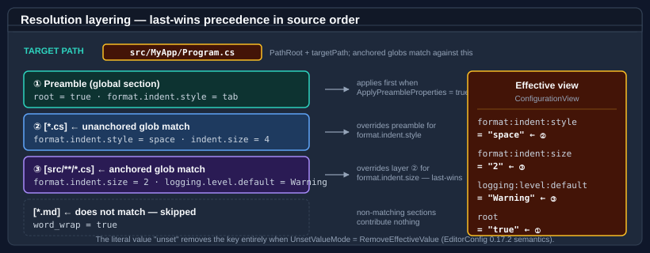

Bodu.Text.Configuration — Core concepts
This page is the vocabulary the rest of the documentation assumes. Read it once before the getting-started samples, and refer back whenever a term feels imprecise.
Part of the Configuration topic.
For the high-level shape of the library and the pipeline diagram, start with the introduction.
Document and view
A document is the parsed-but-not-yet-resolved representation of the source text.
ConfigurationDocument is a sealed type that inherits the read-only
IniDocumentBase model — the library's own trivia-preserving INI structure, which the reader
produces — with a preamble (the GlobalSection) and zero or more named
Sections in source order. The document preserves comments, ordering, and
duplicate-policy decisions, so it can be re-emitted byte-for-byte.
Because it derives from IniDocumentBase, every read member of the INI model is available directly on the document:
doc.GlobalSection["root"], doc.Sections[0].Name, section.Entries, section["indent_size"], and the typed
section.TryGetValue<T>(...) accessors all work without first resolving a view. The document-level surface is
read-only — ConfigurationDocument exposes no way to add or remove sections (that mutation surface lives on the
standalone IniDocument, which adds AddSection / GetOrAddSection / RemoveSection)
— but each IniSection stays editable through AddEntry / SetEntry / RemoveEntry,
which is how a value is changed before a round-trip Save.
A view is the resolved snapshot for one target path — a flat dictionary of colon-delimited configuration keys to their effective string values. ConfigurationView is one-shot: subsequent mutation of the originating document does not retroactively update the view. Take a fresh view whenever the document changes or the target path changes.
source text ──► ConfigurationDocument.Parse ──► ConfigurationDocument
ConfigurationDocument ──► .Resolve(targetPath) ──► ConfigurationView
ConfigurationView ──► .GetXxx(key) ──────────► typed value
Profile
A profile is a named, validated combination of parse, resolve, and write options. Four profiles ship in the box:
| Profile | Intent |
|---|---|
Bodu (default) |
Permissive Bodu defaults: dotted-to-colon keys, whitespace-introduced inline comments, last-wins duplicates, preamble participates in resolve. |
EditorConfigCompatible |
Strict alignment with EditorConfig 0.17.2: inline comments disabled, strict section headers, and preamble properties dropped from resolve (root is consumed by the reader). |
Strict |
Deterministic parsing for generated files: duplicate keys are rejected, key-only properties are not permitted. |
Relaxed |
Permissive parsing of user-authored files: inline comments enabled, duplicates last-wins, diagnostics collected rather than thrown. |
Each option type — ConfigurationParseOptions,
ConfigurationResolveOptions,
ConfigurationWriteOptions — has a static For(ConfigurationProfile) factory that
materialises any of the four profiles, plus a set of cached named presets. The three option types are sealed classes
(not structs); each is immutable once constructed because every property is init-only, so the cached presets are safe
to share across threads. Profiles are starting points, not contracts: compose a custom bag with an object initialiser
and override only the properties that need to differ.
Note
The named static presets differ slightly per option type. ConfigurationParseOptions exposes all four
(Bodu, EditorConfigCompatible, Strict, Relaxed); ConfigurationResolveOptions exposes only Bodu and
EditorConfigCompatible as static properties (use For(profile) for the others); and ConfigurationWriteOptions
exposes Bodu, EditorConfigCompatible, and Normalized (the last is For(ConfigurationProfile.Strict)). The
For(profile) factory on every type covers all four profiles regardless.
Parse, resolve, and write options
Each option type controls one stage of the pipeline.
ConfigurationParseOptions controls the reader:
| Property | Role |
|---|---|
Profile |
The profile this bag represents. Default Bodu. |
InlineCommentMode |
Disabled / WhitespaceIntroduced (default) / Always. |
DuplicateKeyMode |
LastWins (default) / FirstWins / Disallowed (from DuplicateKeyPolicy). |
DuplicateSectionMode |
Preserve (default) / Merge / MergeAdjacent / Disallowed (from IniDuplicateSectionBehavior). |
SectionHeaderMode |
Lenient (default) / Strict / AllowTrailingInlineComment — how trailing content after ] is treated. |
DiagnosticMode |
Throw (default) / Collect / Ignore. |
MaxLineLength / MaxKeyLength |
DoS-resistant caps; defaults 8192 / 1024 characters. Over-length input emits LineTooLong / KeyTooLong. |
TrimKeysAndValues |
EditorConfig-compatible trimming of leading/trailing whitespace; default true. |
AllowKeyOnlyProperties |
Whether lines without = are accepted (the value becomes the empty string); default false. |
KeyOptions |
The ConfigurationKeyOptions applied while reading raw keys. |
DefaultEncoding |
The encoding Load assumes for a stream/file with no byte-order mark; default Encoding.UTF8. |
The SectionHeaderMode knob has no INI equivalent and is worth calling out: under Lenient (the Bodu/Relaxed
default) trailing words after the closing ] are accepted silently; under Strict (the EditorConfigCompatible/Strict
default) they raise the TrailingContentAfterSectionHeader diagnostic; under AllowTrailingInlineComment a #/;
after ] is consumed as a comment while any other trailing content still errors.
The configuration engine parses with its own reader over its own INI document model (the
IniDocumentBase / IniSection / IniEntry family in the Bodu.Text.Configuration namespace) — it does not
depend on the standalone Bodu.Text.Ini format library, so its inline-comment modes, diagnostics, and preamble
handling are free to diverge from the raw-INI dialect.
ConfigurationResolveOptions controls the resolver:
| Property | Role |
|---|---|
Profile |
The profile this bag represents. Default Bodu. |
PathRoot |
The directory anchor that anchored globs are rebased against. When null, the document's load path is used; when neither is available, MissingPathRootMode decides. |
MissingPathRootMode |
UseEmptyRoot (default) / Throw. There is no IgnoreAnchoredPatterns value. |
ApplyPreambleProperties |
Whether preamble (global section) properties contribute to the view. Default true (Bodu/Strict/Relaxed); false for EditorConfigCompatible. |
PathComparison |
The StringComparison used when matching target paths against patterns. Default Ordinal. |
UnsetValueMode |
TreatAsLiteral (default) / RemoveEffectiveValue (EditorConfig sentinel). |
KeyOptions |
The key options applied when expanding raw keys into colon-delimited form. |
Important
MissingPathRootMode only changes behaviour when no target path is supplied to Resolve at all. The Throw
mode raises InvalidOperationException when PathRoot is null, the document carries no load path, and targetPath
is null — the EditorConfigCompatible and Strict resolve profiles select it so a path-less resolve fails loudly
rather than silently returning a preamble-only view. When a target path is supplied, an absent PathRoot simply
means anchored globs are matched against the bare target path (the empty-root behaviour).
ConfigurationWriteOptions controls Save: encoding, newline style, blank-line
policy, property layout. Use the static Bodu / EditorConfigCompatible / Normalized presets (or For(profile)), or supply a
custom bag.
Key — raw, segments, configuration
A configuration key has three concurrent forms:
| Form | Example | Where used |
|---|---|---|
| Raw key | logging.level.default |
The text as authored in the source file. |
| Segments | ["logging", "level", "default"] |
Split on the configured separators. |
| Path | logging:level:default |
The canonical colon-delimited form stored in the view. |
ConfigurationKey is the read-only struct that holds all three.
ConfigurationKey.Parse(rawKey) is the entry point; TryParse is the non-throwing variant.
Lookups on a ConfigurationView accept either the dotted or the colon-delimited form
— view["logging.level.default"] and view["logging:level:default"] return the same value. The view stores keys in
the colon-delimited form to interoperate with Microsoft.Extensions.Configuration.
Key mapping
ConfigurationKey uses a ConfigurationKeyOptions to govern splitting and
mapping:
| Mapping | Behaviour |
|---|---|
DotToColon (default) |
Split on the configured separators; rejoin with :. |
Colon |
Split on the configured separators; rejoin with :. |
Identity |
Split on the configured separators; rejoin with the first configured separator (preserves the original delimiter). |
Splitting always uses the full SegmentSeparators set; Mapping only decides the join character. DotToColon and
Colon therefore produce identical Path output under the default separator set — the distinction is naming intent,
not behaviour. Identity is the one mapping that round-trips the original delimiter (joining on '.' by default).
SegmentSeparators defaults to { '.', ':' }. CaseSensitive defaults to false, matching
Microsoft.Extensions.Configuration, and is surfaced as a ready-made comparer via
KeyComparer (StringComparer.Ordinal or
StringComparer.OrdinalIgnoreCase). AllowEmptySegments defaults to false — a..b is rejected with
ArgumentException unless the property is set explicitly. Keys are constructed through the
Parse(string) / TryParse factories or the equivalent
constructor; control characters in a raw key are rejected at construction time. Equality compares the segment
sequence under the configured comparer, so the raw form is informational only — Logging.Level and
logging:level compare equal under the default options.
Glob pattern and target path
Section headers are interpreted as glob patterns matched against the resolver's target path. The pattern language follows EditorConfig:
| Pattern | Matches |
|---|---|
* |
Any characters except /. |
** |
Any characters including /. |
? |
Any single character. |
[abc] / [!abc] |
Character class / negated character class. |
{a,b,c} |
Alternation. |
[*.cs] |
All .cs files at any depth (unanchored). |
[src/**/*.cs] |
All .cs files under src/ (anchored to PathRoot). |
The target path is the value passed to document.Resolve(targetPath). Before matching, the resolver normalises the
path to forward slashes and rebases it relative to PathRoot: if the path begins with PathRoot + "/" that prefix is
stripped; if it equals PathRoot exactly, only the filename survives; otherwise the path is matched as-is. Anchored
patterns (those that contain /) are then tested against the whole relative path; unanchored patterns (no /) match at
any directory depth.
Important
Section matching requires a target path. When Resolve is called with no target path (or null), the normalised
target is empty and every named section is skipped — only the preamble (when ApplyPreambleProperties is true)
contributes to the view. A path-less resolve is therefore a preamble-only projection, not an "all sections" merge.
When PathRoot is unset, ConfigurationMissingPathRootMode decides what a path-less
resolve does: UseEmptyRoot returns the preamble-only view described above, while Throw raises
InvalidOperationException. The mode has no effect once a non-null target path is supplied.
The pattern compiler is ConfigurationPattern — the same engine the resolver uses,
exposed for callers who want to test pattern matching directly without instantiating a document. Compile memoises
results in a bounded process-wide cache keyed on (pattern, comparison), and each compiled pattern carries a bounded
match timeout so an untrusted section-name glob cannot become a ReDoS vector.
Preamble
The preamble is the EditorConfig name for the file's global section — properties that appear before any [...]
section header. Bodu exposes it as GlobalSection.
Under the default Bodu profile, the resolver layers the preamble first and then each matching section in source
order, so preamble properties act as defaults that any matching section can override. Under
EditorConfigCompatible, ApplyPreambleProperties is false, so the preamble is dropped from resolve entirely — its
well-known root directive is consumed by the reader rather than surfaced as a resolved key.
Resolution layering

The resolver walks the document once:
- If
ApplyPreamblePropertiesis true, copy every preamble property into the working dictionary. Each raw key is run through ConfigurationKey so it is stored in its canonical colon-delimited form. - For each named section in source order, test the header pattern against the normalised target path. If it matches, copy each property into the working dictionary, overwriting any earlier value for the same key (last-wins).
- While copying, apply the
UnsetValueModepolicy: underRemoveEffectiveValue, a property whose value equalsunset(matched case-insensitively) removes the key from the working dictionary rather than setting it. - Record per-key origin metadata (ConfigurationResolvedEntry) so the winning section and source line are recoverable, then wrap the working dictionary in a ConfigurationView.
The walk is single-pass and source-order — no precedence rule beyond "later wins for a given key". This matches EditorConfig semantics; tools that need different precedence rules should layer multiple documents or filter the sections before resolving.
Diagnostic mode
The reader can route recoverable issues three ways:
| Mode | Behaviour |
|---|---|
Throw (default) |
On the first recoverable error, raise ConfigurationParseException and stop. The document is not returned. |
Collect |
Run the parser to completion and attach diagnostics to a ConfigurationParseResult. The document is still returned and its valid portions remain usable. |
Ignore |
Discard diagnostics; return the document anyway. |
Use Throw for generated files where any deviation is a programmer error; use Collect for user-authored files where
you want to surface every problem at once; use Ignore only when you are happy to trust whatever the parser produces.
ParseWithDiagnostics(string, ConfigurationParseOptions?)
returns a ConfigurationParseResult directly, even under Throw (where the
diagnostic list is always empty on a successful parse).
Unset sentinel
EditorConfig defines the literal string unset as a directive that removes the effective value of a property for
the matching path — useful when a deeply nested section should opt out of a default established by an earlier
section.
ConfigurationUnsetValueMode controls how the resolver treats it:
| Mode | Behaviour |
|---|---|
TreatAsLiteral (default) |
The string "unset" is preserved verbatim in the view. |
RemoveEffectiveValue |
The key is removed from the working dictionary; it does not appear in the view. |
The sentinel is matched case-insensitively (unset, UNSET, Unset all qualify) to align with real-world
EditorConfig tooling — a deliberate deviation from the strict lower-case-only reading of the spec. Bodu and Relaxed
profiles default to TreatAsLiteral so the literal text is not silently dropped; EditorConfigCompatible and Strict
default to RemoveEffectiveValue.
Typed accessors
ConfigurationView exposes a family of typed getters built on top of ISpanParsable<TSelf>:
| Getter family | Behaviour on missing key | Behaviour on malformed value |
|---|---|---|
GetString |
Throws KeyNotFoundException. |
n/a — value is already string. |
GetString(key, fallback) |
Returns the fallback. | n/a. |
TryGetString |
Returns false. |
n/a. |
GetInt32 / GetInt64 / GetBoolean / GetEnum<T> |
Throws KeyNotFoundException. |
Throws FormatException. |
GetXxx(key, fallback) |
Returns the fallback. | Throws FormatException (malformed values are never silently swallowed). |
TryGetXxx |
Returns false. |
Returns false (never throws on parse failure). |
GetValue<T>(key) |
Throws KeyNotFoundException. |
Throws FormatException. |
TryGetValue<T>(key, out value) |
Returns false. |
Returns false. |
The GetValue<T> and TryGetValue<T> generics accept any type that implements ISpanParsable<T> — int, long,
double, Guid, TimeSpan, DateTimeOffset, custom records, anything with a span-parseable surface. All numeric and
GetValue<T> parsing is done with CultureInfo.InvariantCulture (and NumberStyles.Integer for GetInt32/GetInt64)
to keep behaviour deterministic across locales.
Two getters apply extra rules beyond plain parsing:
GetBooleanaccepts only the EditorConfig literalstrue/false, case-insensitively.yes/no,on/off, and1/0are rejected withFormatException— broadening the set would break EditorConfig 0.17.2 parity. WrapGetStringyourself if you need a relaxed boolean parser.GetEnum<TEnum>parses member names case-insensitively but guards the result withEnum.IsDefined, so an undefined integer (severity = 99against a three-member enum) and an unlisted combined-flags value (Read, Writewhen only the individual flags are declared) are both rejected. Parse againstGetStringwithEnum.Parsedirectly when you need combined-flag handling.
Resolved-entry provenance
Every key in a view carries origin metadata, surfaced as ConfigurationResolvedEntry
through view.GetEntry(key) and view.Entries. An entry records the canonical Key, the resolved Value, a
SourceLocation, and the SectionPattern of the section that won under last-wins precedence (null when the value came
from the preamble). This is the debugging surface for layered configuration — when a key resolves to an unexpected value,
the entry tells you which section supplied it and where.
ConfigurationResolvedEntry? entry = view.GetEntry("format:indent:size");
if (entry is not null)
Console.WriteLine($"{entry.Key} = {entry.Value} (from {entry.SectionPattern ?? "<preamble>"})");
Only the SourceLocation.LineNumber is reliably populated; line position and length are approximate, and
SourceLocation.Path is propagated only when the document was loaded from a file rather than parsed from a string.
Saving (round-trip)
Save(IniDocumentBase, string, ConfigurationWriteOptions?)
emits the document back to text. The writer preserves comment lines, section ordering, and the original property
ordering within each section, so a parse-then-save round-trip is byte-stable for any document the library produced.
ConfigurationWriteOptions controls encoding (default UTF-8 without BOM), newline style
(NewLine, default \n), the key/value separator (KeyValueSeparator, default " = "), comment prefix
(CommentPrefix, default #), and three booleans — PreserveComments, WriteInlineComments, and
InsertBlankLineBetweenSections. The EditorConfigCompatible preset suppresses inline comments; the Normalized
preset (which is For(ConfigurationProfile.Strict)) additionally drops preserved comments for deterministic output.
For documents the library did not produce — hand-authored INI files with idiosyncratic whitespace — the writer emits canonical formatting, so the round-trip is semantically stable but may rearrange incidental whitespace.
Where to go next
- Getting started — install + runnable minimal samples.
- Bodu.Extensions.Configuration.Text —
IConfigurationBuilderintegration. - Bodu.Text.Configuration API reference — full type-by-type docs.
- Introduction — the high-level shape of the library.
- Configuration topic — this package and its sibling Bodu.Extensions.Configuration.Text; the topic concepts page collects the shared vocabulary.